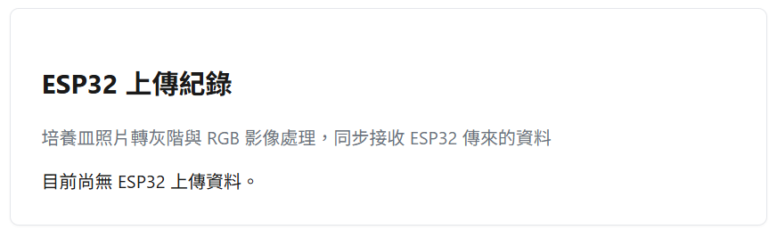
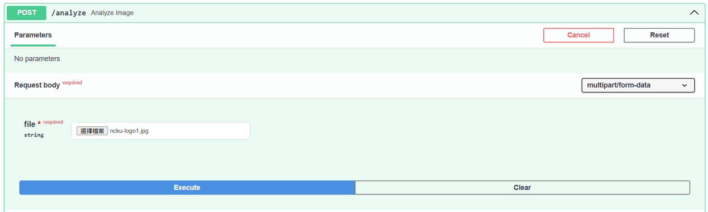
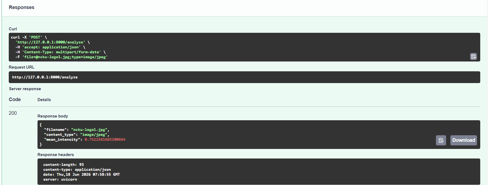

ESP32 資料接收與前端顯示整合
本篇記錄 ESP32 與軟體系統整合的第一階段成果：接收 ESP32 傳來的文字與照片，並在前端顯示。影像處理（灰階轉換、RGB 分析）尚未串接，會在下一階段實作。

本篇記錄 ESP32 與軟體系統整合的第一階段成果：接收 ESP32 傳來的文字與照片，並在前端顯示。影像處理（灰階轉換、RGB 分析）尚未串接，會在下一階段實作。

這篇文章記錄了我們 iGEM 軟體工具從本機開發到正式上線的完整過程：前端用 HTML/CSS/JS， 後端用 FastAPI，前端部署到 GitHub Pages，後端部署到 Render，並解決了部署過程中遇到的 幾個實際問題（例如 GitHub Pages 資料夾限制、Jekyll 蓋掉自訂頁面等）。
這篇文章記錄一套用AlphaFold3（AF3）與HDOCK篩選aptamer變異體的計算流程，從序列輸入到最終排序，包含每一步驟的操作方式、生物學意義，以及兩個工具如何交叉驗證彼此的判斷。
日期：2026-07-11
GGTTGGTGTGGTTGG| 排名 | 變異體 | ipTM |
|---|---|---|
| 1 | pos3_ttog | 0.81 |
| 1（並列） | pos13_ttog | 0.81 |
| 3 | wildtype（對照組） | 0.80 |
| 4 | pos12_ttog | ~0.80 |
| 5 | pos12_ttoc | ~0.79 |
| 6 | pos9_ttoa | ~0.78 |
| 6 | pos3_ttoc | ~0.78 |
| 6 | pos13_ttoa | ~0.78 |
| 6 | pos12_ttoa | ~0.78 |
| 10 | pos7_ttog | ~0.77 |
| 10 | pos4_ttoc | ~0.77 |
| 10 | pos3_ttoa | ~0.77 |
| 13 | pos4_ttog | ~0.74（目前最低） |
排名4~13為圖表目測估計值，精確數值以
outputs/reports/af3_confidence_summary.csv為準。
| 候選 | Docking Score | Confidence Score | Ligand RMSD（Top2模型） |
|---|---|---|---|
| pos3_ttog | -278.92（三者中最佳） | 0.9295 | 0.78 Å（高度收斂） |
| wildtype | -264.37 | 0.9078 | 2.08 Å |
| pos13_ttog | -244.50（三者中最差） | 0.8688 | 1.45 Å |
pos3_ttog 是唯一在AF3(ipTM)與HDOCK(Docking Score)兩套獨立方法中都排名第一的變異體，且HDOCK對其結合姿勢的判斷高度收斂(RMSD 0.78Å)，是目前最好的候選，建議濕實驗驗證。pos13_ttog 雖然AF3分數與pos3_ttog並列最高，但HDOCK結果卻是三者中最差，出現兩套方法意見分歧，代表預測結果不夠穩定。

這次更新中，我們完成了 iGEM 軟體後端的第一個最小可行版本，也就是 MVP。
這個階段的主要目標是確認一件事：
使用者是否可以上傳圖片，後端是否可以成功接收圖片，並使用 Python 進行初步影像分析。
這是未來建立螢光影像分析工具的重要基礎。
目前我們建立了一個 FastAPI 後端，並完成了幾個基本 API：
| API | 功能 |
|---|---|
GET / |
確認後端是否有正常回應 |
GET /health |
檢查伺服器狀態 |
GET /project |
回傳專案基本資訊 |
POST /upload |
上傳圖片並回傳圖片基本資訊 |
POST /analyze |
上傳圖片並回傳初步影像分析結果 |
其中最重要的是：
POST /upload
POST /analyze
這兩個 API 代表後端已經可以接收圖片，並開始進行影像分析。
我們首先建立了 /upload API，讓使用者可以上傳圖片到後端。
當圖片成功上傳後，後端會回傳圖片的基本資訊，例如：
{
"filename": "ncku-logo1.jpg",
"content_type": "image/jpeg",
"size": 76667
}
這代表後端已經可以成功取得：
圖片檔名
圖片格式
圖片大小
這一步非常重要，因為未來 wet lab 的螢光影像也會透過類似方式傳到後端進行分析。
在確認圖片上傳成功後，我們進一步建立了 /analyze API。
這個 API 會接收使用者上傳的圖片，並使用 scikit-image 讀取圖片，再用 NumPy 計算圖片的平均亮度。
目前的分析流程如下：
使用者上傳圖片
→ FastAPI 接收圖片
→ scikit-image 讀取圖片
→ 將圖片轉成灰階
→ NumPy 計算平均亮度
→ FastAPI 回傳分析結果
測試結果如下：
{
"filename": "ncku-logo1.jpg",
"content_type": "image/jpeg",
"mean_intensity": 0.7521581685100664
}
其中 mean_intensity 代表圖片的平均亮度。
在目前的版本中，亮度數值通常介於：
0 到 1
其中：
0 代表較暗
1 代表較亮
因此這次測試圖片的平均亮度約為 0.75，代表整體亮度偏高。
FastAPI 在這個專案中扮演後端 API 的角色。
它主要負責：
接收前端送來的圖片
處理 API 請求
把圖片交給 Python 影像分析程式
將分析結果回傳給前端
也就是說，FastAPI 不是負責做網頁外觀，而是負責讓前端和後端分析程式能夠溝通。
未來完整流程會像這樣：
前端網頁
→ 使用者上傳圖片
→ FastAPI 後端接收圖片
→ Python 影像分析
→ 回傳數值結果
→ 前端顯示分析結果
這次我們選擇使用 scikit-image 作為影像分析工具。
原因是 scikit-image 比較適合科學影像分析，未來可以延伸到更多與螢光影像相關的功能，例如：
背景扣除
閾值分割
螢光區域偵測
螢光強度計算
螢光區域面積計算
目前的平均亮度分析只是第一步，目的是先確認後端分析流程可行。
這次更新的重點不是完成最終版的螢光分析工具，而是先完成最核心的技術驗證。
目前我們已經證明：
圖片可以被上傳到後端
FastAPI 可以成功接收圖片
scikit-image 可以讀取圖片
後端可以計算影像數值
分析結果可以用 JSON 格式回傳
這代表我們已經完成從「圖片輸入」到「數值輸出」的基礎流程。
接下來會繼續擴充這個後端 MVP，主要方向包括：
這次更新完成了 iGEM 軟體後端的第一個 MVP。
目前後端已經可以：
接收圖片
讀取圖片
分析圖片平均亮度
回傳分析結果
這為後續的螢光影像分析工具建立了基礎。接下來，我們會在這個架構上逐步加入更完整的 wet lab 影像分析功能。